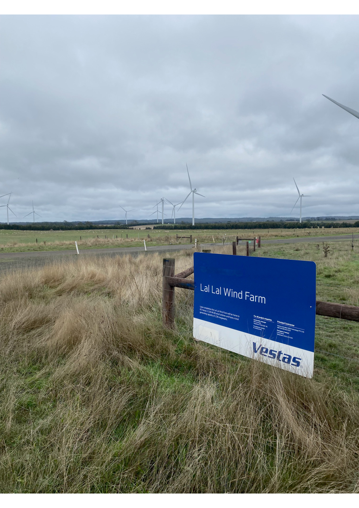

Start Here
If you are new to the Lal Lal Wind Farm Record, this page explains the main question examined by the website and how to follow the evidence.
What is the Lal Lal Wind Farm?
The Lal Lal Wind Farm is a wind farm near Elaine and Yendon, south-east of Ballarat in Victoria.
More than turbines
A wind farm is not approved and operated through one document.
It involves a planning permit, technical standards, approved plans, noise reports, monitoring, government records and decisions made over many years.
Those documents provide the evidence used to examine whether the wind farm’s obligations are being met.

Lal Lal Wind Farm entrance sign, included to help first-time visitors identify the project.
Why was this website created?
The website was created to show the gaps found when the Lal Lal Wind Farm’s planning, technical and regulatory obligations were examined against the available evidence.
Identify what was required
The website identifies the planning, technical and regulatory obligations that applied to the Lal Lal Wind Farm.
Examine the evidence
It examines the available approvals, reports, government records, correspondence and Freedom of Information material to see what they show.
Show the gaps
Where the documents do not clearly show how an obligation was met, the website identifies that gap. It also publishes the questions put to regulators and other organisations, together with the responses received—or where applicable, the lack of a response.
What should you look for?
The Lal Lal Wind Farm is subject to planning, technical and regulatory obligations.
As you read the website, keep one simple question in mind:
Do the available documents show that the Lal Lal Wind Farm’s planning, technical and regulatory obligations are being met?
The website follows the evidence. Where the documents answer the question, it shows them. Where they do not, it shows the gap.
Follow the website in this order
First-time visitors will understand the record most easily by moving from simple explanations to the detailed documents.
Glossary
Learn the words used throughout the website. Technical terms are explained in plain English.
Framework
Understand the main rules: the planning permit, the noise standard and the approved testing plan.
Understanding the Record
Learn how the website tests the available evidence against the requirements and identifies gaps in the record.
Chronology
Follow the important events and documents in date order.
Key Issues
See the main documentary gaps, inconsistencies and unanswered regulatory questions identified by the Trustee.
Detailed Evidence
Examine the standards, monitoring locations, reports and original documents relied upon to identify each gap.
Use the Glossary whenever a term is unfamiliar
Words such as planning permit, background sound, commissioning and Special Audible Characteristics have particular meanings in the documents.
The first important use of a technical term on a page should link back to the Glossary. This allows a new reader to learn as they go without interrupting a technical reader who already understands the term.
One final point
This is an independent website about the documentary record. It is not the official website of the wind farm operator, a regulator or a government agency.
Its purpose is simple: to show what was required, what the available evidence shows, what remains unexplained, and how regulators and other organisations responded when those gaps were raised.